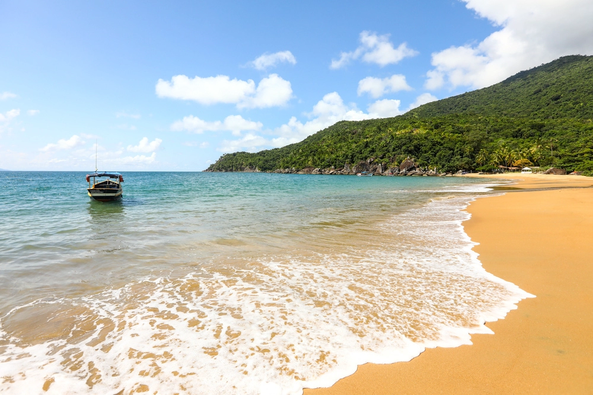
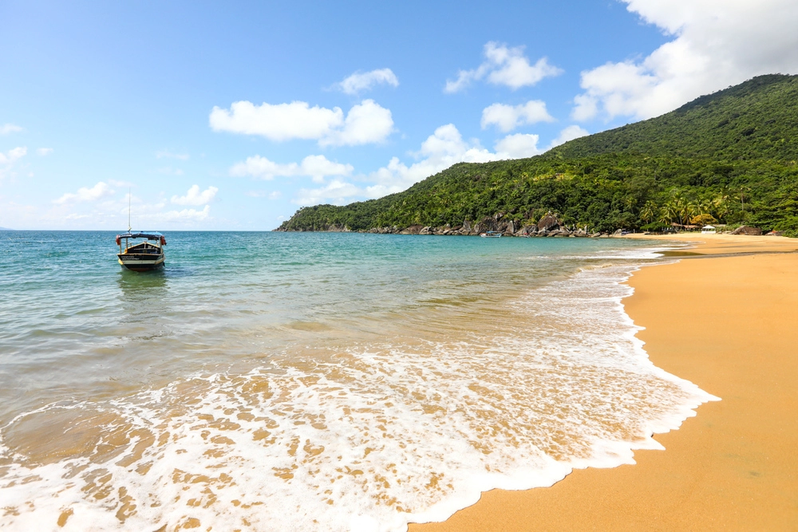

Onde fica Ilhabela?
Ilhabela está localizada no Litoral Norte de SP, bem no chamado eixo “Rio-São Paulo”. Embora seja um dos destinos prediletos dos paulistanos da capital, o arquipélago também fica bem próximo à região do Vale do Paraíba e litoral sul de SP.
Como funciona a travessia de balsa para Ilhabela?
Sim, a balsa é a única forma de acesso a Ilhabela, não há ponte como opção. A não ser que você tenha um barco, ou contrate um particular, para quem viaja de carro ou ônibus, é preciso embarcar em uma balsa para Ilhabela.
Como chegar em Ilhabela de avião?
Apesar de não ter um aeroporto próprio, é possível chegar em Ilhabela de avião. O aeroporto mais próximo é o de São José dos Campos, que fica a cerca de 100 km de distância. Porém, o aeroporto é pequeno e a companhia aérea Azul tem a maior parte de voos que lá aterrissam. De lá, você levará em torno de 2 horas até São Sebastião (de carro).
O Aeroporto de Guarulhos é a melhor opção, por ser um aeroporto internacional tem interligação com a maioria das cidades brasileiras, além de outros países. Outra grande vantagem é que de lá saem ônibus direto para Ilhabela (São Sebastião), uma comodidade. Nossa dica é alugar um carro no aeroporto ou em uma locadora de veículos em Ilhabela, assim você terá mais comodidade para circular por Ilhabela e conhecer todas as belezas do destino. Nesse caso, veja mais informações sobre a travessia de balsa.
 
